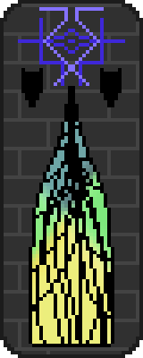

Here's where I document my stuff! Who knows how often this will be updated, or if it will ever be updated, but it's here! If you wanna go back, click here!
Date: 2026-05-25
Well. Despite my promises to update the site more regularly, the site has remained... un-updated. Turns out that not knowing what to write on a website, compounded with working on a website being hard due to how clunkily it is written, make me not really spend that much time actually working on the website!
I'm not making any promises, but the development of the Leptos rewrite has started up again after a long hiatus. I'll keep toiling at this and hopefully I'll get something out soon. When I do end up publishing the new version of the site, a lot of it will probably be rewritten, and I don't just mean the code! My style of writing has changed a lot since I started working on this website over 2 years ago (it's only been 2 years?), and a lot of the website's content could use a redo. So look forward to that..? Except I said I'm not making any promises... oops.
Date: 2025-12-31
It's the last day of the year and, only now, I've come back to
update this site. What happened? Well, I've been """working"""
on the legendary Leptos update
to my website and it turns out that it is not only way harder
than I thought it would be, but it also is going to take a long
time. By a long time I mean weeks of continual work, and as you
can probably infer by my habits maintaining this outpost on the
web, progress has been excruciating slow.
At first I decided that this website would be completely static,
a noble goal as it would increase the availability of the site
to anyone who can render HTML, no (*shivers*) JavaScript
necessary. Unfortunately, my ambition got the best of me. First
I wanted to test my skills and make a little text only game of
solitaire. Then I got annoyed at maintaining the JavaScript
version of solitaire, so I wrote it with Rust and Web Assembly.
Then I wanted to track when I updated this site, so I added a
bit more JavaScript. Then I wanted to make sure I wasn't
spamming GitHub with requests, so I wrote a web server to cache
the website updater. Then I had the worst idea of the history of
this website.
If I'm already using Rust for solitaire, and Rust for the backend of the site updates display, why not use Rust for the site updates display directly? This is where everything went south. I realized very quickly that writing a completely seperate piece of rust code which would need to be packaged and implementing it with JavaScript as a glue would hard to maintain, and that if I wanted to add any more functionality to my site (more games, easier blog updates, more widgets, a space weather page, an RSS/Atom feed, and other things I wish to end up doing with this site), I should make it easier to implement that new functionality. This meant doing what I had been avoiding: using a web framework.
Luckily, a friend of mine had recently used Leptos to make a
site of his own, and it worked very well. I made the decision to
rewrite this site using Leptos to power it in an effort to
simplify everything. It was not as simple as I first hoped.
First mistake: I didn't actually make this decision until quite
a bit after I it thought up. Even though I wasn't actively
rewriting the site, I decided (for some reason) that working on
the existing site would be a waste of time because there was the
possibility that I would end up rewriting it anyways in
the future. This meant I was doing nothing with this site for
about 3 to 6 months with very little actual activity happening
at all. In addition, school starting up distracted me from my
site for a good while.
Second mistake: I decided to reuse my solitaire code. In theory,
this seems like a no brainer. "If I already have the code to
make solitaire work", I thought oh so naively, "why put
in all the work rewritting the game"? Little did I know, I
completely forgot how the codebase worked, it was incompatible
with any sort of intelligent rendering, and it would be a
massive undertaking as my first Leptos project.
Both of these factors compounded into me making net 0 progress on the entire rewrite. What does this mean? Well, I've given up on working backwards and rewritting my website from code I haven't touched in over a year. Instead, I'll be working from the ground up to rewrite this site in small chunks. Instead of foregoing updating this version of the site entirely, I'll keep working on this site while I write a good basis for the new backend. I'll end up trying to copy as much of this HTML and CSS as I can to the new site, so odds are the new site will not look much different (if it looks different at all). I will hopefully be adding some more creative writing to the site, but I think untitled-1 is going on hold for a while. I simply don't know where I want the story to go and a lot of the underlying concepts that aren't revealed yet but have been influencing the story are being reworked by me and River. I never mentioned it before now but we've actually been working on the universe that untitled-1, a yet unreleased (and much smaller scale) story I've been working on, and a few things River has written (but I don't believe has released) together for over 5 years! A lot of my creative ideas go straight into his DMs and eventually will make it on to a page here. Probably.
I did actually change some stuff about the site too! Most importantly, I added River's web badge as well as my friend Fuzz's. I also added my email to the contact info section in case anyone wants to talk to me but doesn't have (or feel like using) Discord. It gets lonely up here in space; I'm always open to people messaging me! I'll try to get back to you as fast as I can, speed of light permitting.
Date: 2025-05-25
Reading back through my old blog posts, jeez was I losing it. I have great news though, I am out of school for the summer! This means I'll (most likely) be back working on this site more frequently! I really want it to be something that isn't just a testiment to how depressed I was, so I've gotta come up with something interesting to put here! If anyone has any ideas I'm open to suggestions, but for now I'll probably just try to make it look a bit better. Thanks for reading, that's all for now folks! -Asta
Date: 2025-04-07
Well, as I assume you can tell from my last post, January wasn't
the best for my mental health. All it took was one warm day and
a trip outside for that to change really quick. Unfortunately,
the curse of the midwest has fallen and it's cold again, but my
mood isn't where it used to be, which is definitely an
improvement!
I've been hooked on looking at stuff in nature. Specifically,
I'm finding rocks and minerals quite interesting, as well as
plants and trees. The trees have even started to bud here,
though the sudden dip into the 20s might kill of all the buds. I
have my figures crossed that they stay alive though! I don't
know the last time I was so interested in the world around me,
and it makes me really happy to just enjoy nature.
More development soon? You'll just have to find out! -Asta
Date: 2025-01-29
Another blog post starting with me apologizing. I guess I should
start with the story. It's still floating around in my head, and
I know what I'm gonna write next, but I just haven't felt the
urge to actually type anything. I haven't been able to keep one
project in my mind long enough to work on it. All my motivation
is coming in infrequent bursts, not enough to do anything
meaningful with.
I should note that I'm writing this exactly 3 hours after the
last of the sunlight passed over the horizon, so I'm not exactly
in the best mental state. Reguardless, I still feel empty. I
don't know if it is because I haven't been doing much, I haven't
ever been doing much, because I feel more lonely than I've ever
been while surrounded by people that feel so distant. I just
don't know why I feel like this. I wish I could keep working on
things like this site, and I won't say that I'm not going to.
I'm just going to say that the updates will be infrequent, more
than infrequent, and possibly absent. If you want to contact me,
do so, I'll probably be there to listen to you. I'm sorry for
being so I'M NOT EVEN
HERE I'M NOT EVEN HERE I'M NOT EVEN HERE I'M NOT EVEN HERE I'M
NOT EVEN HERE I'M NOT EVEN HERE I'M NOT EVEN HERE I'M NOT EVEN
HERE There is a period at the end of this paragraph. I need to
do >something<...
Date: 2024-11-24
Sorry I haven't been working on this story much. I have some of the ideas I need --- in fact I have most of them --- but putting them down on a page is actually really hard! I swear I don't just suck at this!
For real though, I am in fact working on this stuff, just taking my sweet sweet time.
Date: 2024-11-02
You may have noticed how that last post there wasn't actually blog material but story content??? Well uh... yeah... I got bored and wanted to put something on my blog so I drew a little image made a little story and posted it on da internets and all that jazz. It's loosely connected to the actually main story I'm working on (this one) so y'know... Oh and by loosely I mean the two characters said similar words and I didn't want to have TWO files quoting the same few lines of that one Mac DeMarco song. The song more relates to my actual story, but that character I have yet to name can share with the man-amongst-monsters or whatever from that last blog post.
Date: 2024-11-02
Sometimes I get bored. This creature (or at least a
simplified variation of it) appears on each page of my
notebook. It seems to be waiting for someone to walk through
it. I would.
I feel like being physically uncomfortable
is a good state to be in. If it ends up that you're safe,
then you eventually can find comfort in the uncomfortable.
If it turns out not to be, well, you know that you have a
right to be afraid. This won't hurt you, but it'll keep you
out from whatever's behind it. Just be glad it can't move, I
suppose. Its brother, an ambush predator, can. Maybe one day
a depiction of him will be drawn. Don't hold me to it,
looking at that thing scares me a little. I kind of wish I
didn't live where I do. I like being able to look stuff up
and be able to find out information on things; you can't
really do that when you're the only one who knows of these
things' existance.
I don't know exactly where I am, but
<--| CUT |-->
. The lack of period there was unsatifying, so I fixed
it. I'm not quite sure what the last guy was saying, but the
call-in ended there. I've heard from him a few times now,
but he isn't taking calls so, I can't answer any of your (or
my) questions. Let's just hope he's alright. That's all we
can do.

Date: 2024-09-12
Someone needs to sit me down and lecture to me about light units so I can eventually figure them out because god fuckung damn am I confused...
This is worthy of a blog page right? Definitely not, but I'm borrrrred so it goes here.
Date: 2024-09-11
I accidently completely and utterly screwed up the site, someone remind me how to program well... (I put the right column in the left column somehow while trying to clean up the source code.) This has happened many times before but uhhhhh... I didn't have a blog to mald over it on. Fortunately, now I can! Mald, that is.
Date: 2024-09-26
Yes yes, I know these seem horrifically concerning, but all of bad stuff is text I came up with when I was tired and trying to seem interesting. I'm doing okay now, therapy and antidepressants do wonders. But actually, please don't worry about me, I'm doing a lot better.
Distracted by games and life and many other things. I'll get
back to this website soon, I promise!
I'm actually okay. I should stop writing stuff on this website
when I'm extremely tired and trying to be edgy(? or maybe just
dramatic, I'm not quite sure anymore.)
For every step I take forward, at least a few punishments must
be forced.
I'm rapidly oscillating between being reasonable happy and being
prepared to eviscerate myself completely and wholly. I know
there isn't a revival, but do I? After all, I've done it at
least once before...
I'm a rehashed product made as a quick cash grab by a company
that went out of business a month after making me.
nothing matters but everything matters but [continued]
IT'S SO FUCKING BAD BUT YOU'RE STILL ALIVE
The thoughts of becoming more machine than human are back...